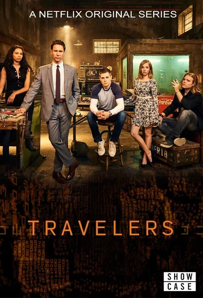

Выбор автора
Путешественники
Travelers
2016
Фантастика
Агенты из далекого будущего «перемещаются» в тела людей в момент их смерти, чтобы незаметно влиться в их семьи, работу и привычки — и предотвратить катастрофы, о которых человечество пока даже не подозревает. Строгий устав запрещает им раскрывать себя, однако судьба, эмоции и случайности постоянно грозят сорвать миссию. Это канадская научно-фантастическая история о противостоянии свободы воли и железных приказов Директора, о людях, которые в этой схеме — лишь носители кода, но чьи полные тревог жизни определяют будущее.
Описание на английском
Operatives from the distant future 'travel' into the bodies of people at the moment of their death: to quietly merge into their families, jobs and habits — and prevent the disasters humanity does not yet see. The legend forbids exposing themselves, while fate, emotions and chance constantly risk wrecking the mission. A Canadian sci-fi about free will versus the Director's iron orders, and about people who are just carriers of code in the scheme — yet whose restless lives decide the future.